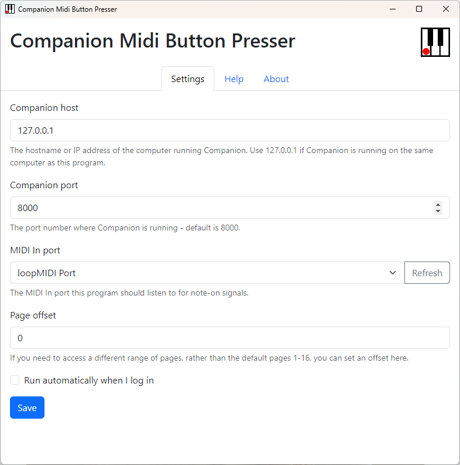
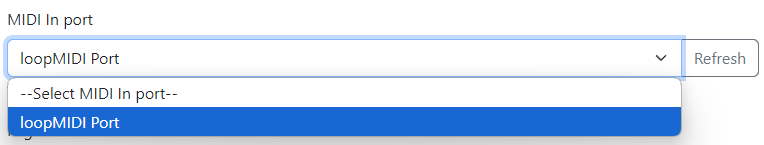

Companion Midi Button Presser

You can now turn to the settings tab within this program.

The Companion host and Companion port fields tell this program where to find Companion. The default settings will work if Companion is funning on the same computer as this program, unless you have selected a non-standard network interface or port number in Companion's settings.
The MIDI In port is where you pick the MIDI port you want to listen on - e.g. the loopMIDI Port you created if you followed the earlier section of these instructions.

Page offset: By default, this module will let you "press" buttons on Companion pages 1 to 16. If you need to access a different range of pages, you can set an offset here - e.g. if you pick a page offset of 20, then this module will let you "press" buttons on Companion pages 21 to 36.
The Run automatically when I log in checkbox will do exactly what it says on the tin.